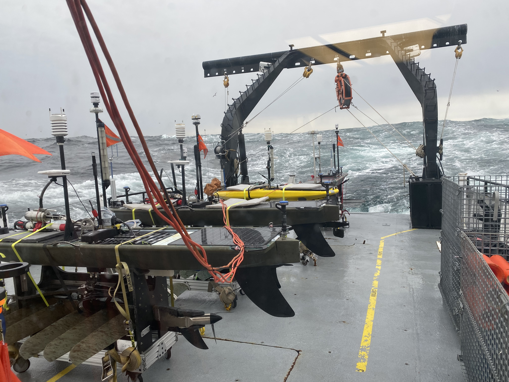

Air-sea interaction
Heat, freshwater, momentum, turbulence, and the evolving structure of the ocean surface boundary layer.
Physical oceanographer studying air-sea interaction, upper-ocean dynamics, and the observing systems used to resolve them, from moorings and uncrewed vehicles to satellite calibration and validation.

The full version keeps the editorial framing but expands it into a usable research site with clear hierarchy, fewer boxes, and stronger pacing between science, leadership, and field evidence.
Heat, freshwater, momentum, turbulence, and the evolving structure of the ocean surface boundary layer.
Connecting in situ measurements and remote sensing to validate sea surface height and fine-scale variability.
Moorings, ships, aircraft, and uncrewed platforms designed to resolve fast-changing ocean processes.
The current site has these signals, but they are visually small. This version turns them into a clear indication that the work is active, current, and visible.
The photo library is still one of the strongest assets in the project. Here it supports the scientific profile rather than feeling like an isolated gallery teaser.

